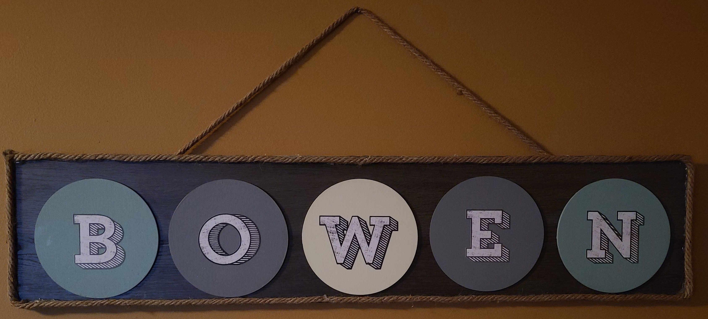
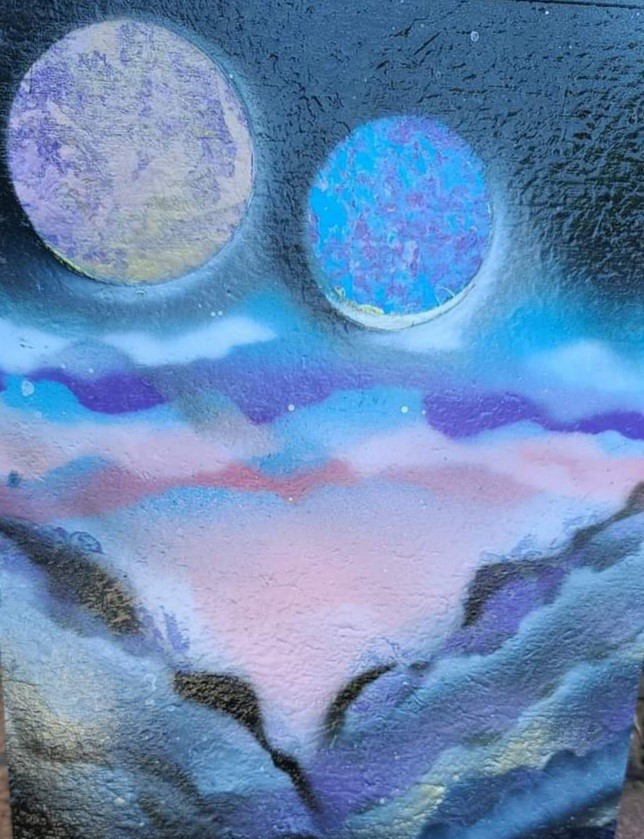
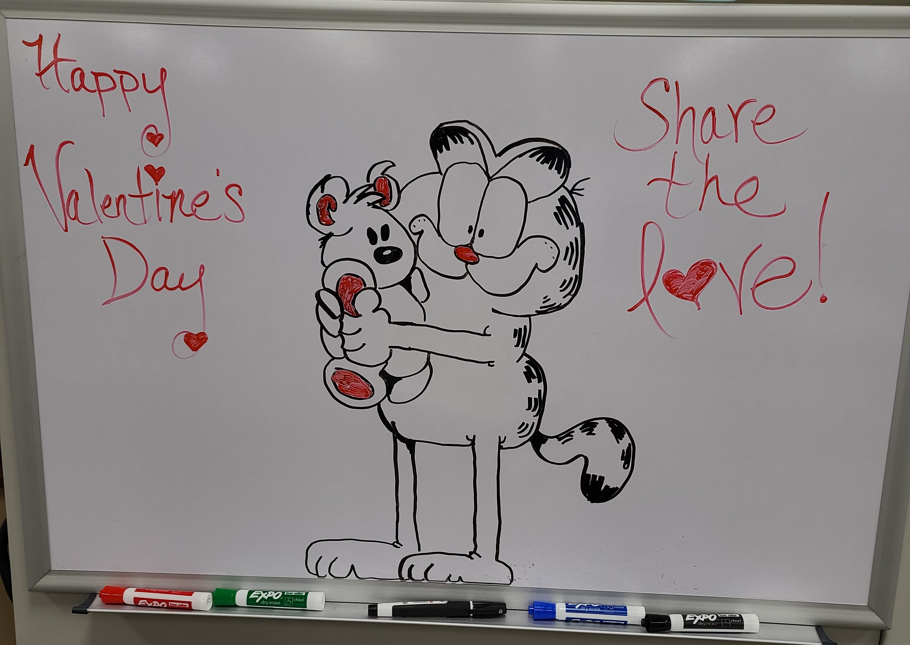

The person I chose to better understand is wife my Sara. One of the initial approaches was a process of creating several
questions in a word format and allowing her to then answer the questions to her completion. We followed up by asking several questions to her verbally
and me capturing her response. This allowed me to expand on the question and come to a deeper understanding of one of the answers that was provided,
we spoke about what was her current hobbies that she enjoys.
Enjoy's creating crafts

custom sign for family friend
This was followed by looking at several of her drawings she created. Most of the artworks were created in pencil of many different things.
Others were created with brushed paint. Some of the artwork was completed on canvas work with paint brushes.
While other works were created using spray cans to develop indented effects on the canvas.
Spray can art

creation of two moons with mountains in the foreground
There were several examples of her applying her art where she currently works,
her creating anything from huge Easter Bunnies to Cowboys to bats with pumpkins on the marker board.
A marker board creation

drawing a picture of Garfield for the kids at school
Another hobby we discussed was her love for photography. Looking at the camara that was being used to the different lens that are available for a shooting.
Some of her photos were available and showed me the process of photo editing. By taking the photos and using tools enhance the image before applying a watermark.
We spoke about her involvement in the school system. It is something that gives her joy each day and gives her a feeling of fulfillment working with schoolchildren.
She is continuing her education by taking college classes and working to become a teacher.